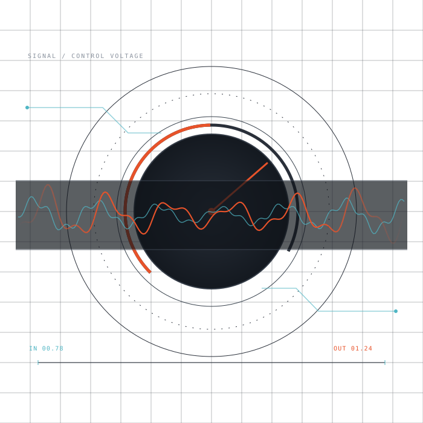
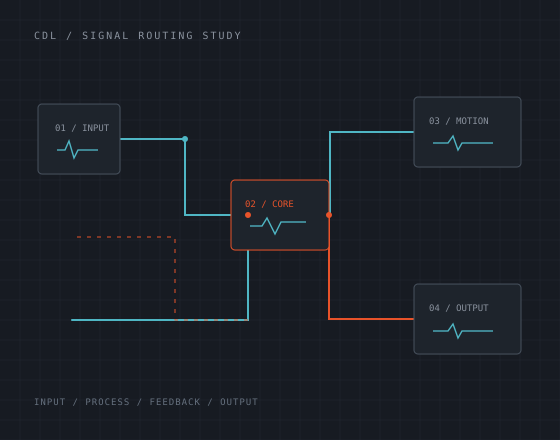

01 / INSTRUMENTS
Build a sound.
Responsive instruments that make movement, timbre and timing easy to shape.
Instruments and effects for producers who like to push past the preset. Built for deliberate sound design, happy accidents and a fast route from idea to track.

Each project starts with a sound or a workflow worth exploring. The controls stay close to the thing they change.
Responsive instruments that make movement, timbre and timing easy to shape.
Effects for turning a familiar take into something you could not have recorded twice.
Small, focused tools that remove friction between the first idea and the finished track.
We care about the way a sound changes when you touch it. A useful plugin should invite experimentation, show you what it is doing and stay out of your way when you have a track to finish.
Meet the lab
FIG. 02 / SIGNAL PATH STUDYCircuit Drift Lab designs audio tools for people who make music by listening closely and changing one thing at a time. We specialize in open source technologies for the major DAWs, building instruments, effects and utilities around clear signal flow and hands-on control.
Some tools will be subtle. Others will pull a sound apart. The common thread is a direct, useful interface that makes it easy to find something of your own.
Follow the work on GitHubCircuit Drift Lab builds open source audio software. If something from the workbench found its way into your tracks, a Monero donation helps fund the next release.
87GB3d1gqdNSnWtd4g4xTV1T9m6XfJgn48QymMCtDTWZ5s5dvbcnpeQSsijpuUcYBrRHo6e6amEWHBrvH5zcYyj3EgZc8py